Lecture 12
-
Abstract
This lecture is about the boundary layer solution for the flat plate, where self similar solution is possible. We have seen how the Boundary layer equation might turn out in the case of a general body. (without the solution being self similar).
-
Simplified Governing equation for flat plate
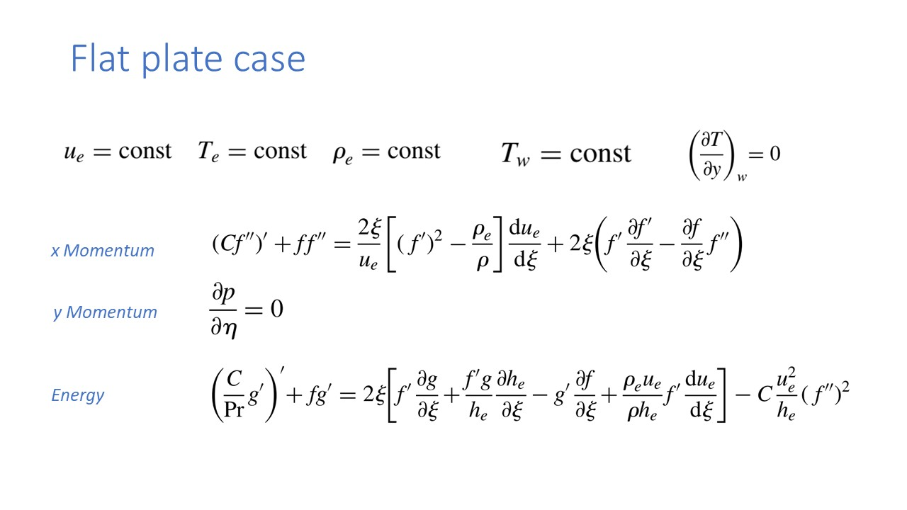Consider the flat plate at zero angle of attack. We know the propertites at the outer edge of the boundary layer which are represented by \(U_e,T_e,\rho_e\) etc are known to use since these are the properties of boundary layer at the outer edge, and these are known from the invicid layer theory.
And these values are all constant for the case of flow over the flat plate.The x-momentum, y-momentum, and energy equations that were derived earlier, are given on the sildes.
-
Slide 3
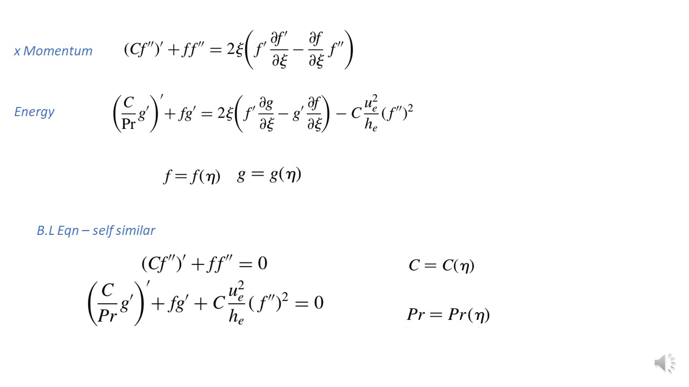The simplified form of the boundary layer equation for the flat plate case is given in the slide. This equation is still a PDE. We have tried finding the self similar variables for simplifing the boundary layer equation. And therefore the variable \(\eta\) is only, what flow is depending on. We assume that g and f are the function of \(\eta\) only..
And if that assumption is made, then the boundary layer equation will further simplify.You have the x momentum equation given above. Substitute the expression of f and g (whihc are now function of \(\eta\) only) in the above equation and see it by yourself what it changes to.
The energy equation is also, simplified. Looking at the eqaution we see that both the equations are only function of \(\eta\). And they are no longer a partial differential equation.
Since the equation itself doesn't depend on \(\zee\). Therefore the solution also will not be a function of \(\zee\), and this would mean that solution will be independent of \(\zee\) thus self similar.
B.L Qqn-self similar is the governing equation of compressible boundary layer flow over a flat plate.
Also appearing in the equation is the ratio of \(\rho\) and \(\meu\), which is \(\text{C}\), and prandlt number \(P_r\). These are functions of \(\eta\). And using our assumption we could again see that they too are functions of \(\eta\) only. Which means that f and g will vary within the boundary layer, but along the boundary layer, they won't change, in the \(eta\) VS \(\delta\). -
Slide 4
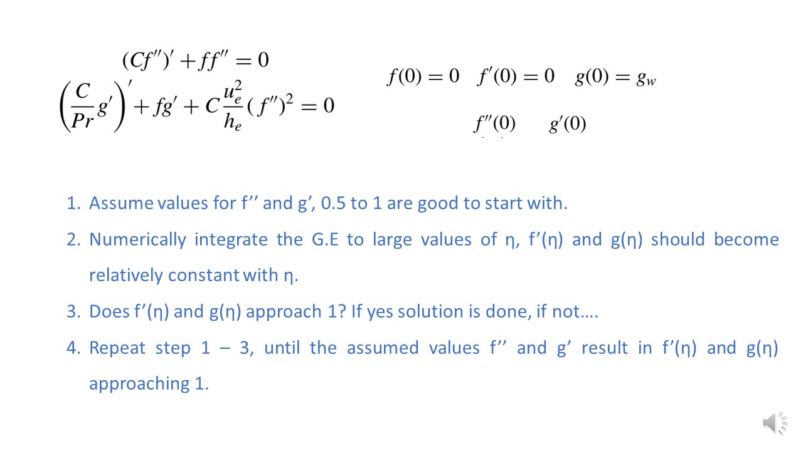The governing equation along with the boundary condition could be solved using any mathod like one being Runga Kutta Method. I have studied this method for the first time when learning finite elment method, link to which is provided above.
Look at the governing equation. The x component of momentum equation is third order in \(f\), while the energy eqaution is second order in \(f\). And therefore we would need to have five boudanry condition to solve the governing equation (three for f and two for g). We already have three boundary equation which we have seen in the previous lecture. Link to that is, Here. This condition was \(f(\eta)\), \(\dot{f}(\eta)\), and \(\dot{g}(0)\) at wall (\(\eta = 0\)) is equal to zero. And the task is to find the boundary condition on \(\ddot{f}(0)\), and \(\dot{g}(0)\).
So now we will assume the values of \(\ddot{f}(0)\), and \(\dot{g}(0)\) and try solving for the solution (f,g)Shooting Mehtod
- Assume initial values for
f''andg', typically between 0.5 and 1. - Numerically integrate the governing equations (G.E.) over a large range of
η(eta), that is to the edge of the boundary layer. At the edge of the boudary layer \(\dot_{f}(\eta)\), and \({g}(0)\), must converge to some constant value. Recall f prime is u be ue, and g is h by h_e. Therfore upon intergation is these values reaches constant, then we have reached the edge of the boundary layer. - Check if
f'(η)andg(η)approach 1 asηbecomes large. - If they approach 1, the solution is complete; if not, adjust the guesses for
f''andg'and repeat from step 1.
Once the solution is converged for the assumed value of \(ddot_{f}(\eta)\), and \(\dot_{g}(\eta)\), we could find the Skin Friction, and Heat Transfer through the wall.
And we are going to get this by following apprach (recall from the previous slide)

Notice that skin friction could be found using the value of f double prime at the wall, which in this case of flat plate won't even be function of \(\zee\).In essence, this method is a shooting method where you guess unknown initial conditions and use numerical integration to see if the solution meets the desired boundary conditions at infinity (or a large value of η). If not, you revise your guesses and try again until you find the right initial conditions that satisfy the boundary conditions at infinity.
This approach solves the nonlinear boundary value problem by turning it into an initial value problem with iterative correction of guesses. It is common in boundary layer similarity solutions such as the Blasius equation.
- Assume initial values for
-
Slide 5
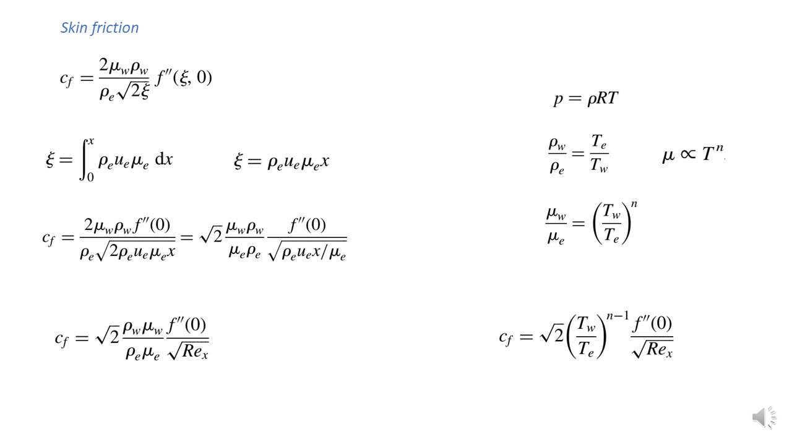In the last lecture the expression for \(c_f\) was derived. And in general they both depend on the \(\eta\) and \(\delta\), but in our case of flat plate, we know that \(C_f\) is constant. And therefore \(\delta\) could be written as shown. Now we substite the value of \(\delta\) in the expression of \(C_f\).
Also in above, we could see that \(\delta\) doesnt have to be a variable on which f depends.This expression could be further simplified to a form involving Reynold's Number \(Re_x\). We see that the skin friction is inversly proportional to Reynold's number.
Fucking remember this!. Note the formula of reynold's number and fucking derivation.For the gases, vicocity is function of temperature only. And if considering exponential variation, then the viscocity variation could be written as given at the right. Also considering perfect gases, we could see that the density could be written as ratio of temperature. Substituting everything in the governing equation, we get a simplified expression of skin coefficient.
And remember that we could directly calculate the value of skin friction from the f double prime that was obtained from boundayr layer solution. And with this expression of skin friction coefficient, we could calculate the skin frictions.
-
Slide 6
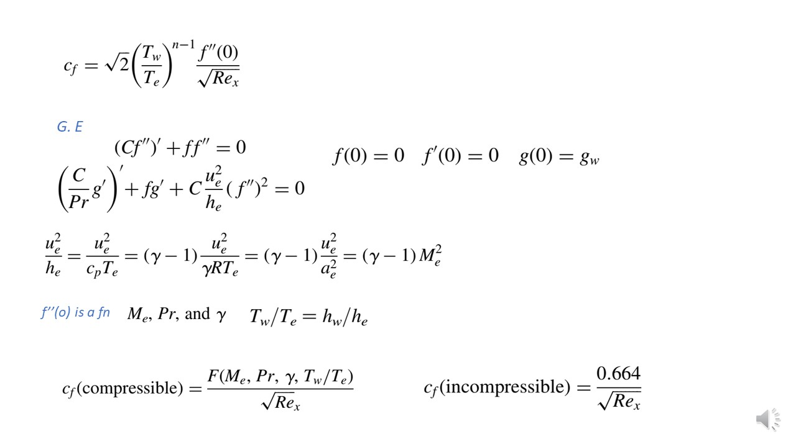Notice the second equation in the section of govenring equation. We see that in this second equation, double prime f is a function of prandlt number (simply because it appears in the equation). Also another term appearing in the equation is \(\frac{u_e^2}{h_e}\).
For the case of a calorifically perfect gas, \(\frac{u_e^2}{h_e}\) could be expressed as function of \(\gamma\) and \(\text{M_e}\). And this is shown in the third line of the silde.
So clearly, this value of double prime f is the function of mach number and gamma from the latter argument and is the function of prandlt number from the first argument.
It is said that from boundary condition we will see that this value (f''(0)) wil depend on ratio of wall temperature and boundary layer edge temperature.In the simplified form using the understanding from the above discussion, we could express \(C_f\) to be the function of (as shown). And let us now compare this to skin friction of incompressible case. The only difference is that here the constant gets replaced my a paramter whcih depends on many values (\(\text{F}(M_e,Pr,\gamma,\frac{T_w}{T_e}))).
So after calculating the value of \(\text{f}\) double prime we could get the skin coefficent of compressible case, just that it will now depend on many other paramters and will not just be constant. -
Slide 7
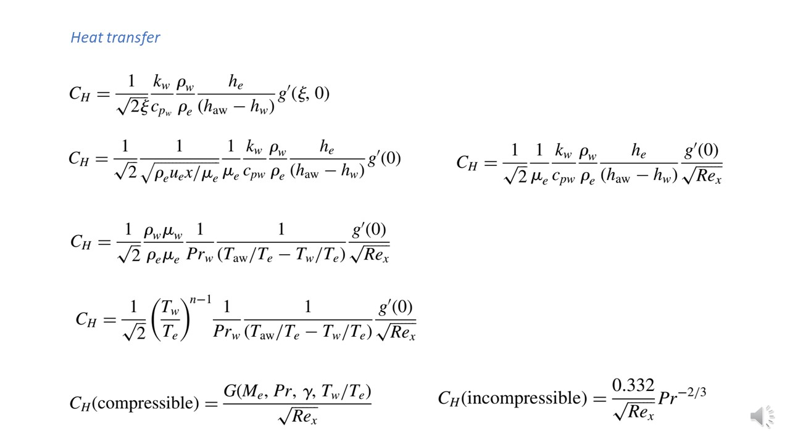The first expression shows the heat transfer coefficent that was obtained in last lecture.
- We could substitute the value of \(\zee\) into the equation, get what's written in the second line.
- For the case of calorifically perfect gas, enthaply \(\text{h}\) could be written as \(C_p \times T\).
- Also in the second line there is ratio of thermal conductivity (\(k_w\)) and \(C_{pw}\) appearing. And we could use the definition of prandlt number \(Pr = \frac{C_p \times \meu_w}{k_w}\) and some how get it into this equation. Now doing so there will be a extra \(\meu_w\) in the expression of \(\text{C_H}\).
In the third line we see that there is an extra \(\meuy_w\) sitting. And we also know that ratio of density and viscocity could be epxressed in terms of temperature ratio for calorifically perfect gas. Using that we have finally obtained the expression for \(C_H\).
Now we compare it with the incompressible. And just like skin friction there are may dependency in the case of compressible for heat transfer coefficient compared to incompressible flow.
-
Slide 8
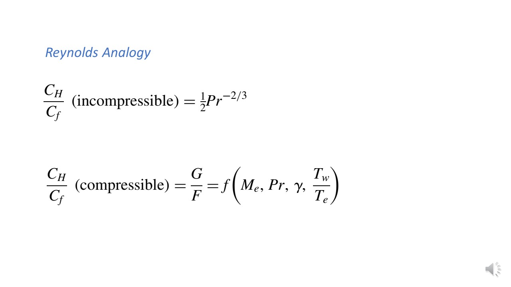Ther relation could be seen in above for compresible and incompressible cases. No staright forward methods to find the values of these ratio for imcompressible and compresible flows.What is Reynold's Analogy?
Reynolds' analogy is a classical concept in fluid mechanics that establishes a relationship between momentum transfer (fluid friction) and heat transfer within a boundary layer or turbulent flow.
The analogy states that when the Prandtl number (Pr) is close to 1 (typical for gases), the transport rates of momentum and heat due to turbulence are nearly the same.
Reynolds' analogy enables the prediction of heat transfer rates from measured or calculated values of friction (momentum transfer), which is highly useful in engineering analyses.
-
Slide 9
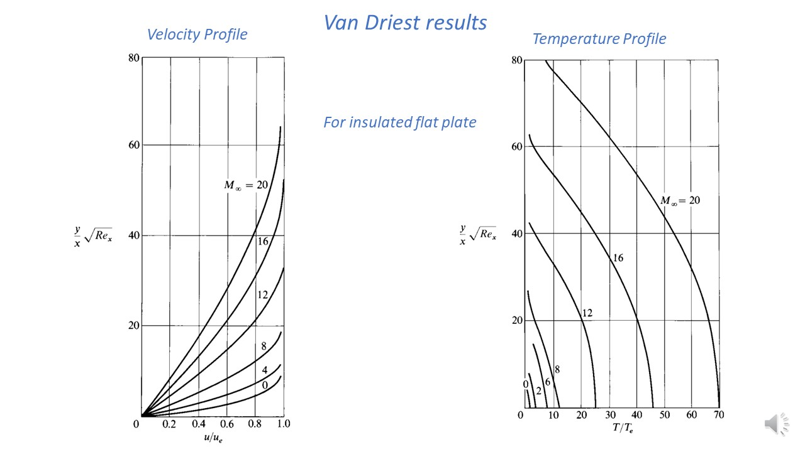Van Dreist solved gthe equation for wide range of problems. First we will take a look at the Velocity Profiles.
- At any given location on the plate and at any given reynold's number, the increase in mach number (0-20), the boundary layer thickness increases. This is an important aspect in the hypersonic flow that with increase in mach number the boundary layer thickness increases.
- Looking at the temperature profile, with increase in mach number the temperature increases at a given x location and at a given reynold's number.. Also to be noted here is there is no gradient of temperature at the wall. And this is because we ahve considered insulated plate (so the heta flux is zero).
-
Silde 10
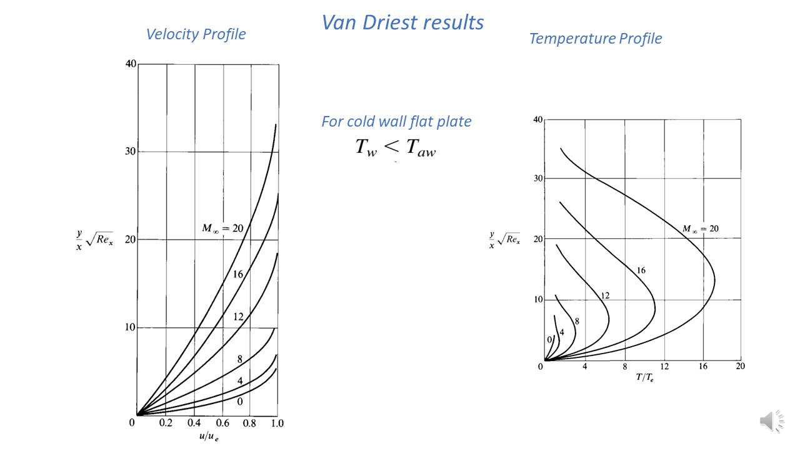Now we look at the case where plate has a cold wall temperature (no insulated, where haet transfer is going to occur).
- In the velocity profile, We see that at any given location for a given reynold's number the boundary layer thickness increases with mach number.
- Due to viscous dissipation the value of temperature will increases with increaes in the Mach number. And this could seen in general.
-
In the case of temperature profile, again with the increase in Mach Number, the temperature value increases. Whats needs to be focused here is that at the wall there exist a temperature gradient. Also we see that first the temperature peaks at some value and the n it again approaches the wall temperature.
This peak value of temperature gives us the estimation of viscous dissipation happening in the boundary layer. We also see that effect of viscous dissipation increases with increase in mach number (as the peaks fo temperature for high mach number are higher than that of lower mach number).
-
Slide 11
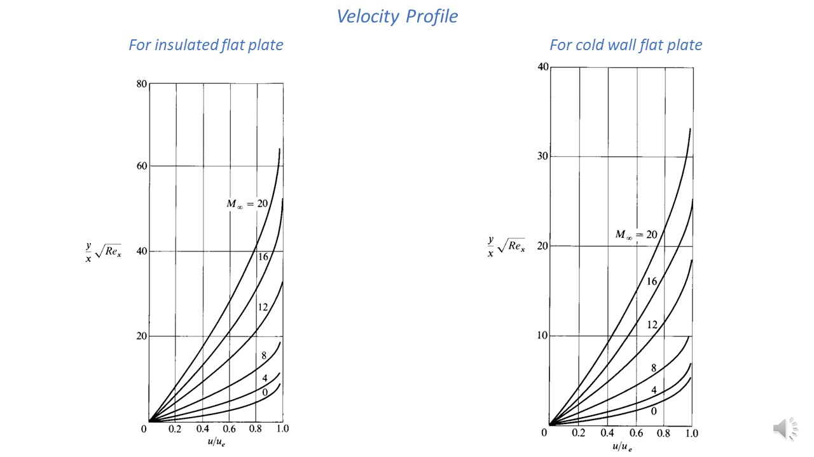Comparing the velocity profile for insulated and cold wall flat plate we see that the thickness of boundary layer is higher in the case of insulated flat plate. This clearly explains that effect of cold wall is to reduce the thickness of boundary layer.
The reason could be explained, when we have a look at temperature profile for cold wall and insulated flat plate.
-
Silde 12
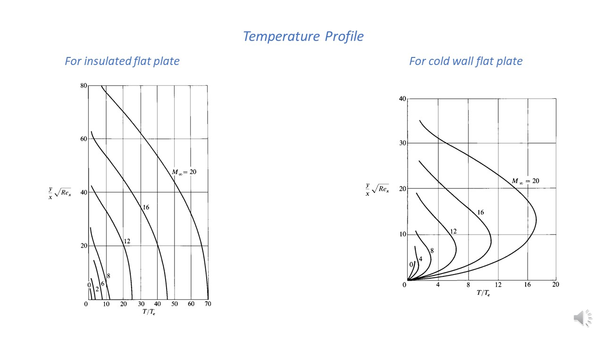Comparing the temperature profile we see that temp is higher in insulated flat plate (ranging from 0 to 80), however it is lower in the case of Cold wall case where it ranges from (0-40).
For a cold wall plate (temp less than adiabatic temp), density of the fluid will be larger at the wall for cold wall plate (due to lower temp). And if the density is larger it means the given mass flow rate could be accomodated with smaller area, and this would mean lower thickness of boundary layer. And hence boundary layer thickness of cold walled flat plate is lower than that of insulated flat plate.
-
Silde 13
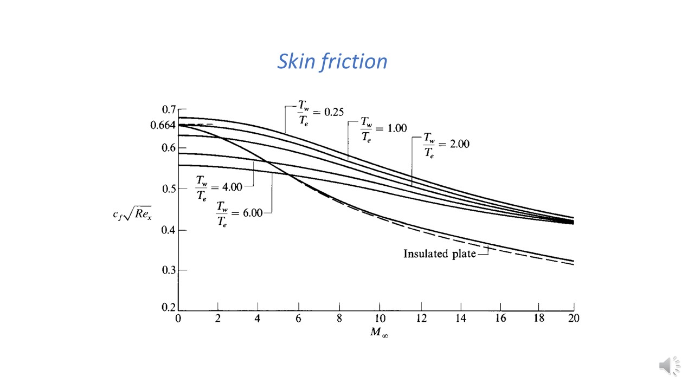Given above is variation of skin friction with mach number, for a flat plate. Both insulated flat plate and non insulated flat plate is considered.
We see that for both the kind of flat plate the value of skin friction decreases with increase in mach number.
For insulated flat plate we see that value of skin friction drops to almost half of it's value. Also, decrease in skin friction coefficient doesn't mean that the skin friction will also decrease with increasing mach number. Infact shear stress at wall is proportional to square of Mach Number.
From the graph of Non Insulated plate we see that here the effect of skin friction is to increase the wall temperature. For a colder wall, density at wall will be larger and thus thickness of boundary layer will be small. And if thickness is small the velocity gradient will be larger, and this would mean larger skin friction.
For the case if insulated plate where the mach number approachs zero (Incompressible) the value of skin co-efficient will be a constant value 0.664.
-
Slide 14
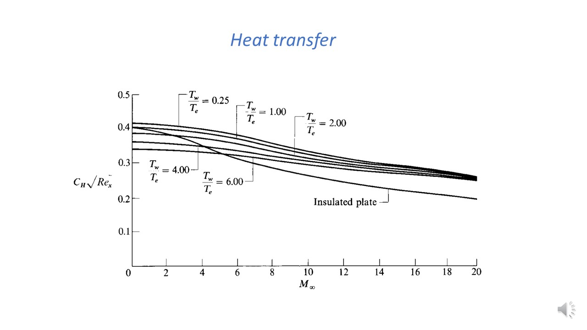The variation of heat transfer coeffient is plotted with mach number in the above graph. We see that trends obtained as similar to ski friction. And this could be understood using the Reynold's analogy that we have seen previously.
-
Summary
In this lecture we have seen that boundary layer equation for flat plate is Self similar. And then we have seen the relation between mach number, different temp boundary condition and Boundary layer thickness.